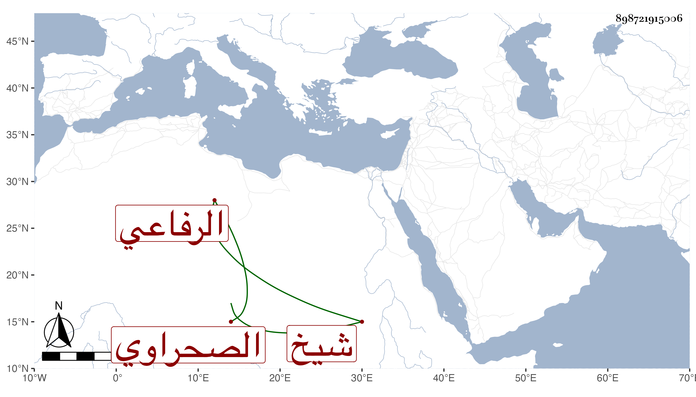

0902Sakhawi.DawLamic.ITO20230111-ara1.EIS1600.898721915006
Biography ID: 898721915006
53
أحمد بن علي بن حسين بن البدر النجم بن الزين الرفاعي الصحراوي شيخ طائفته ووالد علي الآتي . ولد في يوم الثلاثاء ثالث شعبان سنة تسع وثلاثين وثمانمائة وتردد إلي كثيرا في سماع الحديث ومجالس الإملاء وكذا سمع على بقايا من المسندين وقرأ على إمام الكاملية وفيه حشمة وتودد .
